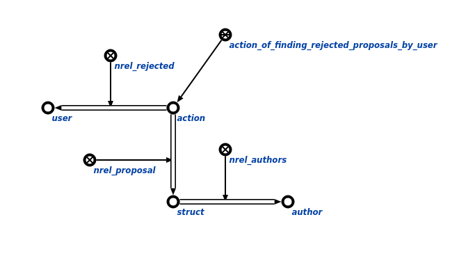

Команда пользовательского интерфейса для поиска отклоненных предложений конкретным пользователем с заданным контекстом предназначена для поиска отклоненных предложений в рамках контекста, который ограничивает область поиска агента. Первым аргументом команды является пользователь, для которого необходимо найти все отклоненные предложения.Вторым агрументом является контекст в рамках которого осуществляется поиск. Результатом выполнения команды является вывод на экран всех отклоненныx предложений конкретного пользователя в рамках контекста.
